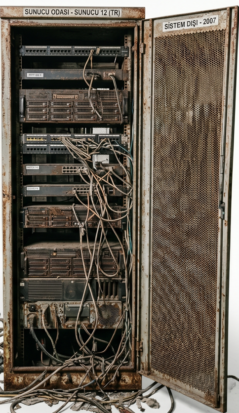
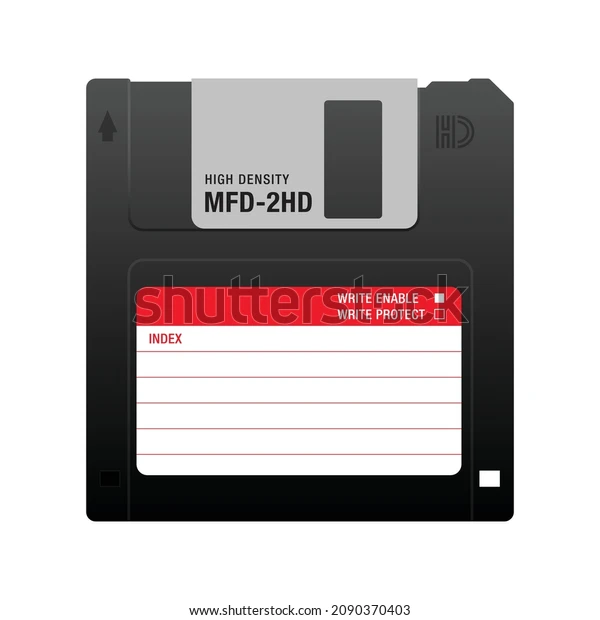
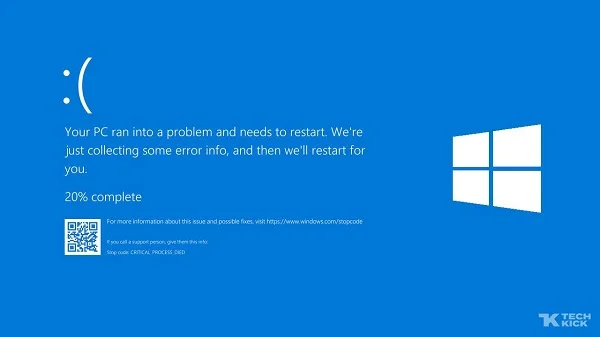
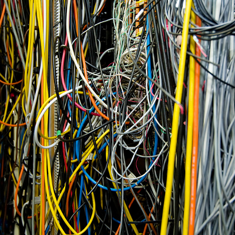

GÜÇLENDİRİCİLER (AWS)
 AWS Logo: +50 Temel Puan
AWS Logo: +50 Temel Puan
Lambda: Yenilmezlik ve Hız (4 sn)
S3: Veri Kalkanı (1 Çarpma Engeller)
EC2: İşlem Gücü (x2 Puan, 5 sn)
ENGELLER (ESKİ BİLİŞİM)

Eski Sunucu Rafı
Tarihi 3.5" Disket
Mavi Ekran (BSOD)
Dolaşık Kablo Yumağı